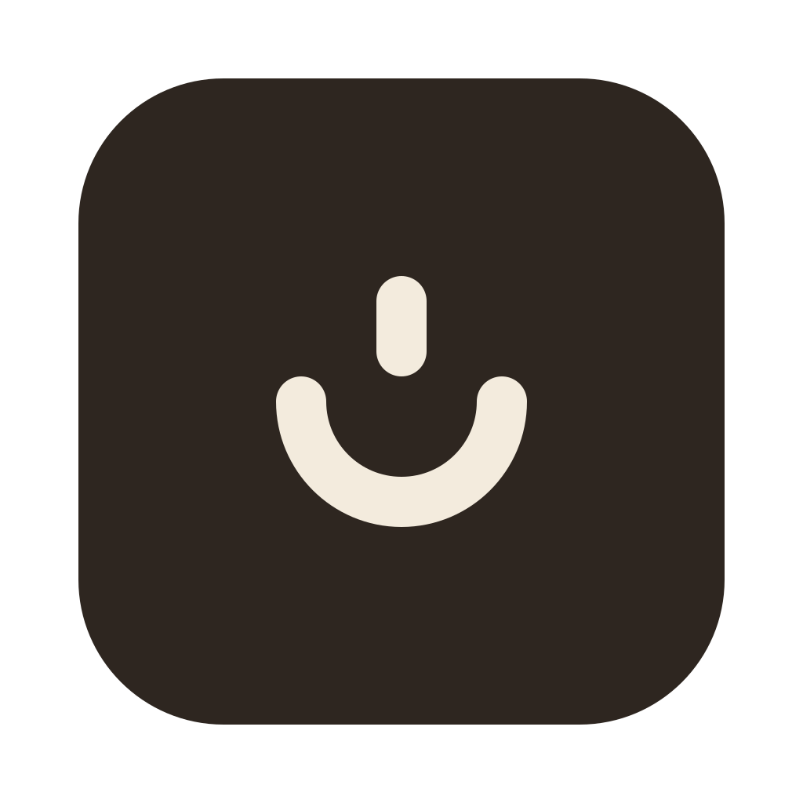
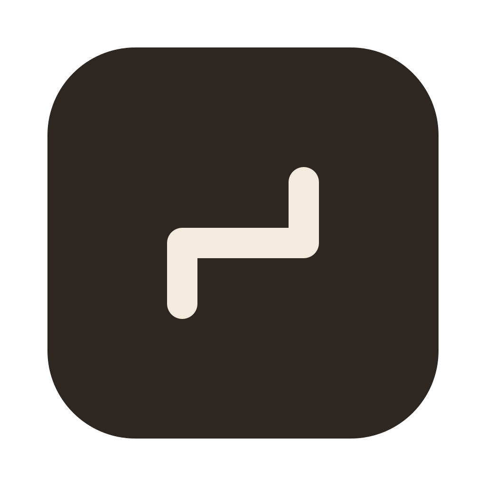
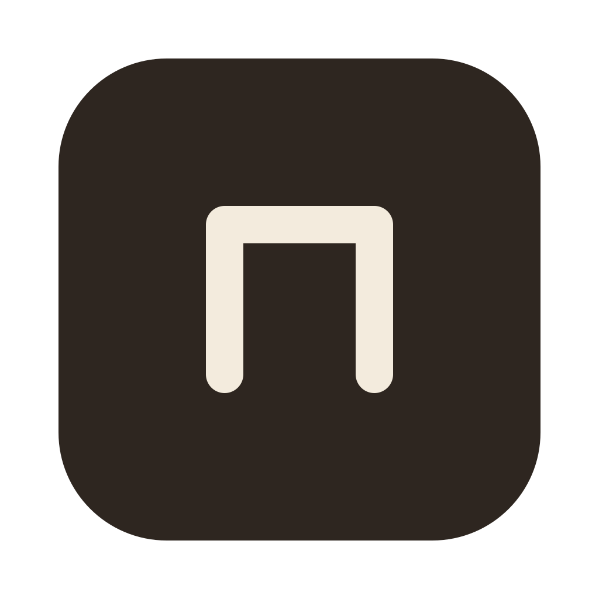
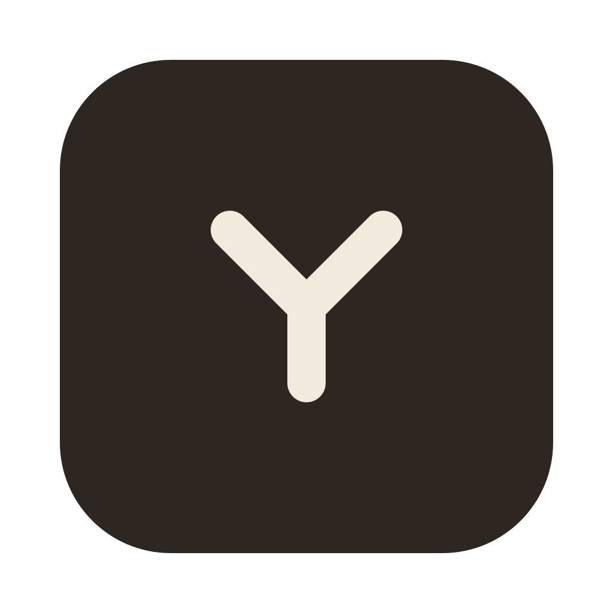

A single open orbit expresses returning to practice, with a deliberate gap that leaves room to keep learning.

2. Quiet LampA shallow bowl and one upright flame suggest understanding kindled through steady attention.
Two connected semicircles turn repetition inward, suggesting review that deepens understanding.

4. Measured StepsThree equal straight segments form a restrained ascending path, making progress feel deliberate rather than hurried.
Two balanced strokes turn the pause before an answer into a symbol of active thought.

6. ThresholdAn open-bottom doorway frames learning as something the learner must enter for themselves.

7. ConnectionThree branches meeting at one junction reduce the growing knowledge graph to its simplest meaningful form.
A rounded triangle gives steady practice a stable base and a single upward direction.